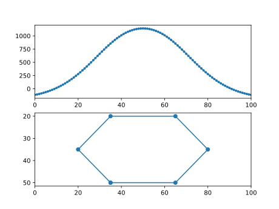

Contents
User guide
Mag2Dpoly is a Julia package conceived for forward magnetic anomaly calculation due to two-dimensional polygonal bodies with uniform arbitrary polarization.
The formulations implemented in this package are that of Talwani & Heirtzler (1962, 1964), Won & Bevis (1987) and revised Kravchinsky et al. (2019).
If you use this code for research or else, please cite the related paper:
Alessandro Ghirotto, Andrea Zunino, Egidio Armadillo & Klaus Mosegaard (2020). Magnetic Anomalies Caused by 2D Polygonal Structures with Uniform Arbitrary Polarization: new insights from analytical/numerical comparison among available algorithm formulations. Submitted to Geophysical Research Letters.
The specific procedures for each formulation, the analytical/numerical results derived from their comparison and the rectification made to Kravchinsky et al. (2019) algorithm are describde in detail in the paper above.
Documentation
Installation
To install the package simple enter into the package manager mode in Julia by typing "]" at the REPL prompt and then use add, i.e.,
(v1.5) pkg> add Mag2DpolyThe package will be automatically downloaded from the web and installed.
At the moment the package is not yet registered in the official Julia registry, so, to install it run the following in package mode:
(v1.5) pkg> add https://github.com/inverseproblem/Mag2Dpoly.jlAlternatively, use the path where the directory of the package is located, be it local or remote (Github):
(v1.5) pkg> add /path/to/Mag2Dpoly.jlTheoretical Background
For a theoretical explanation, let us consider a three-dimensional non-magnetic space in which a body infinitely extended in the $y$ direction is immersed.
The common aim of all formulations is the calculation of the magnetic field of this body upon an observation point $(x_0,z_0)$ located along a profile aligned to the $x$ direction (the positive $z$ axis is assumed pointing downward).
The starting assumption is that our body can be considered as discretized by an infinite number of uniformly-magnetized elementary volumes with infinitesimal dimensions $dx$, $dy$, $dz$.
Within this assumption, the magnetic field associated to the body can be mathematically expressed in terms of a line integral around its periphery, represented in two dimensions as its polygonal cross-section (in red). 
Tutorial
First load the module and define some magnetization vectors,
using Mag2Dpoly
# induced magnetization
Jind = MagnetizVector(mod=4.9,Ideg=90.0,Ddeg=45.0)
# remanent magnetization
Jrem = MagnetizVector(mod=3.1,Ideg=45.0,Ddeg=0.0)and then define some observation points
# angle with the North axis
northxax = 90.0
# number of observatoin
N=101
xzobs = hcat(LinRange(0.0,100.0,N), -1.0*ones(N))Finally the general list of vertices of the poligonal bodies and the relative indices mapping each body to its vertices:
# vertices of the poligonal bodies
vertices = [35.0 50.0;
65.0 50.0;
80.0 35.0;
65.0 20.0;
35.0 20.0;
20.0 35.0]
# indices of vertices for the body
ind1 = collect(1:6)
bodyindices = [ind1]
# construct the poligonal body object
pbody = MagPolygBodies2D(bodyindices,vertices)MagPolygBodies2D(BodySegments2D[BodySegments2D([35.0 50.0; 65.0 50.0; … ; 35.0 20.0; 20.0 35.0], [65.0 50.0; 80.0 35.0; … ; 20.0 35.0; 35.0 50.0], 6)], [35.0 50.0; 65.0 50.0; … ; 35.0 20.0; 20.0 35.0])
At this point the total field can be computed. We select "talwani" as the forward type:
# type of forward algorithm
forwardtype = "talwani"
# arrays of magnetization vectors
Jinds = [Jind]
Jrems = [Jrem]
# compute total field
tmag = tmagpolybodies2Dgen(xzobs,Jinds,Jrems,northxax,pbody,forwardtype)101-element Array{Float64,1}:
-116.16336912423323
-107.60475622349603
-98.17723975959665
-87.82662842366807
-76.49775256996033
-64.13484643609522
-50.68200185889778
-36.083699080365044
-20.28541994999382
-3.2343484367466506
⋮
-20.28541994999403
-36.083699080364866
-50.68200185889757
-64.13484643609497
-76.49775256996033
-87.8266284236681
-98.1772397595965
-107.60475622349612
-116.16336912423299Now we can plot the results:
using PyPlot
xmi=minimum(xzobs[:,1])
xma=maximum(xzobs[:,1])
figure()
subplot(211)
plot(xzobs[:,1],tmag,".-")
xlim(xmi,xma)
subplot(212)
x = [pbody.bo[1].ver1[:,1]...,pbody.bo[1].ver2[end,1]]
y = [pbody.bo[1].ver1[:,2]...,pbody.bo[1].ver2[end,2]]
plot(x,y,"o-")
xlim(xmi,xma)
gca().invert_yaxis()
Public API
Mag2Dpoly — ModuleMag2Dpoly
A module to perform magnetic anomaly calculations for 2D polygonal bodies.
Exports
Data structures
Mag2Dpoly.BodySegments2D — Typestruct BodySegments2DStructure containing the segments of a polygonal body. To create an instance a set of indices have to be passed on.
Fields
ver1::SubArray(x,y) for first set of vertices (beginning of segments)
ver2::SubArray(x,y) for second set of vertices (end of segments)
nsegm::Integertotal number of segments
Vertices of the polygonal bodies must be provided counterclockwise to the function BodySegments2D to perform magnetic anomaly calculation using the functions in the next section Forward functions
Mag2Dpoly.MagPolygBodies2D — Typestruct MagPolygBodies2DStructure containing a set of polygonal bodies described by their segments and all vertices. To create an instance, input an array of vectors of indices (of vertices) for each body and the array of all the vertices.
Fields
bo::Array{BodySegments2D,1}array of bodies defined by their vertices
allvert::Array{var"#s14",2} where var"#s14"<:Realarray of all vertices for all bodies
Mag2Dpoly.MagnetizVector — Typestruct MagnetizVectorStructure containing the components of a magnetization vector, i.e., module, inclination and declination angles.
Fields
mod::Realmodulus
Ideg::Realinclination in degrees
Ddeg::Realdeclination in degrees
Forward functions
Single polygonal body
Mag2Dpoly.tmagpolybodies2D — Functiontmagpolybodies2D(xzobs::Array{var"#s16",2} where var"#s16"<:Real, Jinds::Array{MagnetizVector,1}, Jrems::Array{MagnetizVector,1}, northxax::Real, bodies::MagPolygBodies2D) -> Array{_A,1} where _A
Total magnetic field (2D) for a set of polygonal bodies defined by their corners. Takes into account both induced and remnant magnetization. Based on Talwani & Heitzler (1964), the default algorithm in Mag2Dpoly package.
Mag2Dpoly.tmagpolybodies2Dgen — Functiontmagpolybodies2Dgen(xzobs::Array{var"#s16",2} where var"#s16"<:Real, Jinds::Array{MagnetizVector,1}, Jrems::Array{MagnetizVector,1}, northxax::Real, bodies::MagPolygBodies2D, forwardtype::String) -> Array{_A,1} where _A
Total magnetic field (2D) for a set of polygonal bodies defined by their corners. Takes into account both induced and remnant magnetization. Generic version containing four different algorithm formulations forwardtype, passed as a string:
- "talwani" –> Talwani & Heitzler (1964)
- "talwani_red" –> Talwani & Heitzler (1964) rederived from Kravchinsky et al. 2019
- "krav" –> Kravchinsky et al. (2019) rectified by Ghirotto et al. (2020)
- "wonbev" –> Won & Bevis (1987)
Multiple polygonal bodies
Mag2Dpoly.tmagpoly2D — Functiontmagpoly2D(xzobs::Array{var"#s23",2} where var"#s23"<:Real, Jind::MagnetizVector, Jrem::MagnetizVector, northxax::Real, body::BodySegments2D) -> Array{_A,1} where _A
Total magnetic field (2D) for a polygon defined by its corners. Takes into account both induced and remnant magnetization. Based on Talwani & Heitzler (1964), the default algorithm in Mag2Dpoly package.
Mag2Dpoly.tmagpoly2Dgen — Functiontmagpoly2Dgen(xzobs::Array{var"#s13",2} where var"#s13"<:Real, Jind::MagnetizVector, Jrem::MagnetizVector, northxax::Real, body::BodySegments2D, forwardtype::String) -> Array{_A,1} where _A
Total magnetic field (2D) for a polygon defined by its corners. Takes into account both induced and remnant magnetization. Generic version containing four different algorithm formulations forwardtype, passed as a string:
- "talwani" –> Talwani & Heitzler (1964)
- "talwani_red" –> Talwani & Heitzler (1964) rederived from Kravchinsky et al. 2019
- "krav" –> Kravchinsky et al. (2019) rectified by Ghirotto et al. (2020)
- "wonbev" –> Won & Bevis (1987)
Forward algorithms alone
These functions are not exported. To call them type Mag2Dpoly. before the name of the functions.
Mag2Dpoly.tmagtalwani — Functiontmagtalwani(x1::Real, z1::Real, x2::Real, z2::Real, Jx::Real, Jz::Real, Iind::Real, Dind::Real, C::Real) -> Any
Total magnetic field (2D) for a line segment. Formulas from Talwani & Heitzler (1964).
Mag2Dpoly.tmagtalwanired — Functiontmagtalwanired(x1::Real, z1::Real, x2::Real, z2::Real, Jx::Real, Jz::Real, Iind::Real, Dind::Real, C::Real) -> Any
Total magnetic field (2D) for a ribbon. Talwani & Heitzler (1964) modified by Kravchinsky et al. (2019).
Mag2Dpoly.tmagkrav — Functiontmagkrav(x1::Real, z1::Real, x2::Real, z2::Real, Jtotx::Real, Jtotz::Real, Iind::Real, Dind::Real, Cnorth::Real) -> Any
Total magnetic field (2D) for a line segment. Formulas from Kravchinsky et al (2019) rectified by Ghirotto et al. (2021).
Mag2Dpoly.tmagwonbev — Functiontmagwonbev(x1::Real, z1::Real, x2::Real, z2::Real, modJind::Real, modJrem::Real, Iind::Real, Dind::Real, Irem::Real, Drem::Real, C::Real) -> Any
Total magnetic field (2D) for a line segment. Formulas from Won & Bevis (1987).
Useful functions
These functions are not exported. To call them type Mag2Dpoly. before the name of the functions.
Mag2Dpoly.convert_H_to_B_nT — Functionconvert_H_to_B_nT(H_Am::Real) -> Any
Convert from the field H (A/m) to B (nT).
Mag2Dpoly.convert_B_nT_to_H — Functionconvert_B_nT_to_H(B_nT::Real) -> Any
Convert from the field B (nT) to H (A/m).
Mag2Dpoly.magcomp — Functionmagcomp(modJind::Real, Iind::Real, Dind::Real, modJrem::Real, Irem::Real, Drem::Real, C::Real) -> Tuple{Any,Any,Any}
Vector addition of magnetic (remnant + induced) components.
Mag2Dpoly.checkanticlockwiseorder — Functioncheckanticlockwiseorder(body::BodySegments2D) -> Bool
Check whether the polygonal body has segments ordered anticlockwise.